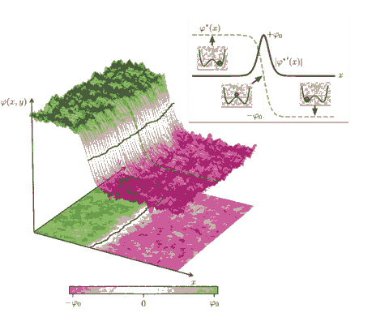
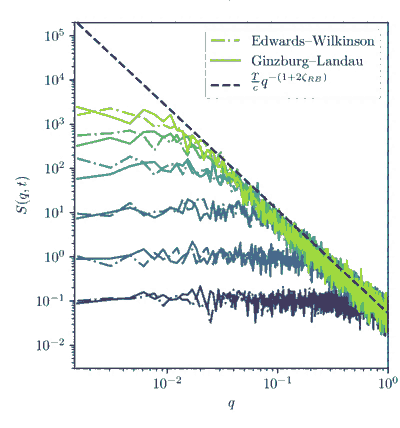

从 φ(r,t) 到一条会 depin 的畴壁，中间到底做了哪些近似？
前两章已经把问题拆成两种语言：bulk order parameter 可以产生复杂畴结构，elastic interface 则擅长描述 threshold、roughness 和 universality。数值建模真正困难的地方，不是“把 TDGL 写进代码”，而是知道每一步 coarse-graining 保留了什么、丢掉了什么，以及网格有没有悄悄改掉你的物理参数。
核心来源：Chen 2008 来自项目 Drive 根目录；Caballero et al. 2020 来自项目 Drive `03 Depinning, elastic-interface, RFIM theory`；Fedeli et al. 2019 来自项目 Drive 的 phase-field 文献集。Figure 均来自这些 PDF 本身。
1 · Chen 2008：phase field 不是画畴图的软件，而是一套自由能 + 动力学
最先要固定的是模型层级。phase-field 不追踪每个原子，而用空间连续的极化场 P(r) 描述局域状态；domain wall 不是单独画进去的几何线，而是 P 从一个自由能极小值连续过渡到另一个极小值的区域。自由能里至少要知道哪些项在竞争：local Landau potential 决定偏好的极化态，gradient term 惩罚过快的空间变化，electrostatic / elastic terms 则提供长程耦合与边界条件。
It describes a domain structure using the spatial distribution of spontaneous polarization. The evolution of a domain structure towards equilibrium is driven by the reduction in the total-free energy of an inhomogeneous domain structure including the chemical driving force, domain wall energy, electrostatic energy as well as elastic energy.
With all the important energetic contributions to the total-free energy, the temporal evolution of the polarization vector field, and thus the domain structure, is then described by the time-dependent Ginzburg-Landau (TDGL) equations.
作者真正支持什么
phase-field 用空间分布的 polarization 表示 domain structure，并通过总自由能下降描述其演化；该框架能显式容纳 domain-wall、elastic 与 electrostatic 能量。
不要偷换成什么
Chen 的综述不意味着任意简化的标量 φ⁴ 模型都能定量代表某个 sliding-FE 材料。材料级预测需要重新说明 order parameter、symmetry、long-range terms 与参数来源。
2 · 把复杂铁电压成最小标量模型：你到底删掉了什么？
如果目标不是重现实验材料的全部畴结构，而是研究一堵 180° 壁在 quenched disorder 中怎样运动，可以进一步缩成一个标量 order parameter φ。最小自由能可以写成：
保留下来的自由度
局域 order parameter、有限壁宽、畴的生成/消失、曲率、overhang、bubble，以及在需要时加入长程场或多分量耦合的可能性。
被扔掉的自由度
具体原子滑移坐标、晶格级 Peierls potential、真实多层 stacking labels、完整 tensor polarization，以及若未显式加入就不存在的 electrostatic / elastic nonlocality。
3 · Caballero 2020：什么时候 φ(x,y) 真能约化成 u(y)？
这篇就是 06 → 07 的关键桥。bulk GL 不对 interface 形状做先验假设；elastic-line 模型则把墙压成单值函数 u(y,t)。作者做的不是“说它们差不多”，而是从 GL 的 soliton profile 出发，把 wall position 当 collective coordinate，并比较两种模型的 roughness 与 structure factor。
For a bulk description, we consider a two-dimensional Ginzburg–Landau model evolving with a Langevin equation, and boundary conditions imposing the formation of a rectilinear domain wall. At this level of description no assumptions need to be done over the interface.
On a different level of description, we consider a one-dimensional elastic line model evolving according to the Edwards–Wilkinson equation, which only allows one to study continuous and univalued interfaces.

彩色 surface 是 φ(x,y)，黑线是从 bulk field 中抽出的 interface；右上角 tanh-like profile 展示了有限 wall width。这个图最值得记：u(y) 是从 φ(r) 涌现出来的低维坐标，不是另一套互不相干的模型。

作者不是只比较 wall snapshot，而是比较从 bulk field 抽出的界面统计量。这里保留 B(r,t) 的坐标、时间色标和理论/数值曲线，用来判断 model reduction 是否在目标尺度成立。

与 B(r,t) 一起看，S(q,t) 检查的是同一界面在 Fourier 空间的尺度结构。两种描述在作者建立的参数映射与适用条件下给出相容结果，才支持把 diffuse wall 约化成 elastic line。
真正能拿来用的判据
壁宽相对观察尺度足够小、interface 大体 single-valued、低温/弱 bulk fluctuation，并且抽出的 u(y) 的 roughness / structure factor 与 reduced model 在目标尺度上相容。
失效信号
强 nucleation、islands、persistent overhangs/bubbles、壁宽与相关长度同阶、强局域变形，或不同 wall-extraction 方法给出显著不同 ζ。此时不要强行拟合 elastic-line exponent。
4 · Fedeli 2019：disorder 要进入“物理项”，而不是只给结果图加噪声
Different kinds of defects were considered: holes, point charges and polarization pinning in single crystals, as well as grain boundaries in polycrystals, without and with additional dielectric interphase.
It can be seen that defects lead to nucleation of new domains. Compared to the energy barrier for switching in an ideal single crystal, the overall coercive field strength is significantly reduced towards realistic values.
| 连续场里的做法 | 物理含义 | 与 06 的关系 |
|---|---|---|
| V(φ,r) 或 α(r)、barrier(r) 随位置变 | 局域 switching cost / wall energy 随位置变；若 ±φ 对称仍保留，常可看成 random-bond-like | 随机的是 landscape，不直接偏爱 + 或 − |
| −h(r)φ | 局域 bias 直接偏爱 order-parameter 的某个符号 | continuum random-field coupling；但不等同于“已经用了 RFIM” |
| 固定区域 φ 或极大局域 barrier | pinning centre / frozen region | 更接近强、局域、非高斯 defect，而不是白噪声 |
| 有限相关长度 hℓ(r) | defect landscape 有真实尺寸 ℓ | dx 改变时必须保持 ℓ 的物理长度不变 |
5 · 最容易把数值结果做假的地方：dx 改了，disorder 也跟着变
下面不是某篇论文的直接原句，而是本站对 continuum white disorder 的离散化推导。它是做 convergence test 前必须固定的量。
h = σ * normal()，然后把 dx 从 1 改成 0.5 却保持 σ 不变，你并没有只“加密网格”；你同时把 continuum disorder strength 改弱了。反过来，若目标是固定物理白噪声强度，应让输入标准差按 1/dx 缩放。白噪声 disorder
固定的是 Δ，而不是数组里每个 pixel 的标准差。一般 d 维下，std ∝ dx−d/2。
有限相关长度 disorder
先定义物理 correlation length ℓ 和 covariance，再离散。只要 dx 足够解析 ℓ，就不应把它继续当 δ-correlated noise 用同一缩放规则硬套。
6 · 一套不会自欺的 depinning 数值实验
用两畴初态或边界条件得到单一 diffuse wall；先在无 disorder、无 drive 下检查 wall width 与静态稳定性。
明确 RB / RF / strong defects 的物理定义；固定 physical strength 与 correlation length，而不是固定 pixel amplitude。
为了 depinning，优先恒定 E 的单壁实验；P–E triangular loop 可以保留给 switching phenomenology，但不拿它替代 v(E) threshold experiment。